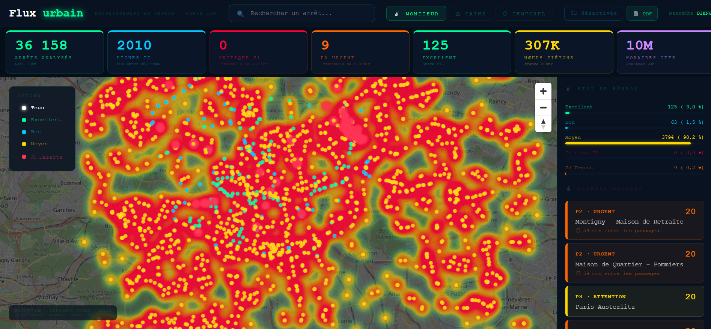

Ingénieur SIG · Géomarketing · Spatial Data
3 ans d'expérience en analyse spatiale et géomarketing retail.
2 ans chez ALDI sur 71 PDV · Master UPEC ·
Python · PostGIS · QGIS · Machine Learning · React.
À propos
Titulaire d'un Master Géomarketing à l'Université Paris Est Créteil, j'ai acquis 3 ans d'expérience en SIG et analyse spatiale — dont 2 ans chez ALDI Immobilier sur un réseau de 71 points de vente IDF, et une expérience à la Direction de l'Urbanisme de Dakar.
Je maîtrise toute la chaîne SIG : administration PostGIS, analyse spatiale avancée, automatisation Python/QGIS Modeler, scoring d'implantation multicritères et Machine Learning spatial. J'ai développé deux outils déployés en production — SiteScore et UrbanFlow.
Stack technique
Parcours professionnel
Portfolio projets — déployés en production
Analyse spatiale des zones de chalandise par segmentation client DBSCAN. 2 000 clients lillois · 5 clusters · 281 IRIS · Isochrones multimodales. Zone réelle découverte : 727 km² vs 314 km² cercle classique — +132%.
Moteur de recommandation d'implantation commerciale IDF. Analyse 5 264 IRIS, croise 7 259 supermarchés OSM, les prix DVF 2024 et un Random Forest (68% accuracy) pour recommander les meilleurs emplacements avec estimation du CA potentiel en €/an.
Plateforme d'intelligence réseau transport IDF niveau opérationnel. Analyse 54 054 arrêts GTFS IDFM (RATP, SNCF, OPTILE), calcule les isochrones piétonnes sur le vrai graphe OSM (307K nœuds), identifie 226 déserts de mobilité classés P1/P2/P3. Dashboard React + FastAPI avec heatmap temps réel, slider 24h animé et export DXF AutoCAD pour les ingénieurs voirie.
Productions cartographiques



Parcours académique
Analyse & statistiques spatiales · SIG · Géomarketing retail · Régression spatiale
Aménagement du territoire · Enquête terrain · Analyse spatiale
Contact
Disponible pour des opportunités en ingénierie SIG, géomarketing, analyse spatiale et Spatial Data.